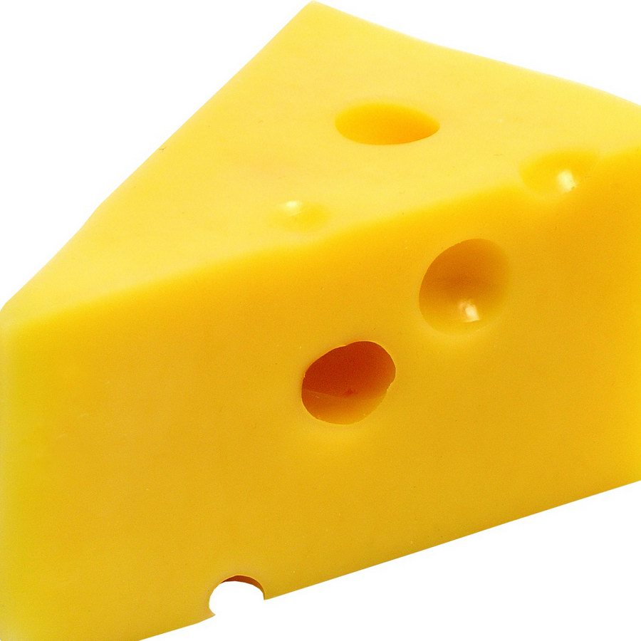

About Yellow
Yellow is a really cool color and I like it a lot. It is very nice to look at. And very versatile. It is used in many foods and items.

Yellow Cheese
Yellow’s Uses
- Yellow’s present in foods
- Yellow’s present in nature
- Yellow’s present in man-made objects
- Yellow’s is everywhere and it's awesome